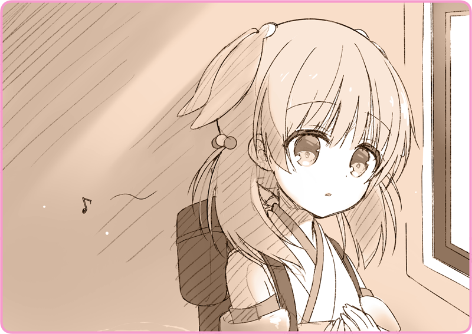

プリマドール・アンコール
03-10 冬の花火（10）－終－
目が醒めたとき、リリアは光の中にいた。
暖かな光だ。白銀に反射するオレンジ色の輝き。まるで目を灼くような眩さを感じていた。
天国に行けたのだろうか。でも、そんなはずはない。リリアはいくつもの罪を犯した。罪人は地獄に堕ちる。幼い頃から、総主教会で何度も聞かされたはずだ。こんな平穏が手に入るはずもない……。
中年女「おはよう、お嬢ちゃん」
女性の声だ。太く、それでいて柔らかい。瞳を巡らせると、恰幅のいい中年女性の姿があった。
中年女「まったく、命冥加なこった」
どうやらリリアは、ベッドの上に寝かされているらしかった。
リリア「私……どうして……」
中年女「どうもこうもあるものか」
腕組みをして、大げさに息を漏らす。
中年女「機械人形があんたを連れてきたのさ」
リリア「え……？」
中年女「しかも皇国製だ。いったいどこから領内に入ったんだろうね。こっちが慌てている間にどっかにいっちまったけど……」
話がまったく見えない。機械人形が？ 私を？
中年女「あんた、アルタリアに侵入しようとしたのかい？ まったく無茶をしたねぇ……射殺されても文句はいえないよ。足だけで済んで幸いだったね……医者の到着があと少し遅れていたら、どうなっていたことか……」
リリア「あ、あの……ここは……いったい……？」
中年女「……ああ、心配しないでいいさ。ここは正真正銘ローベリア領内さ。ま、森を超えればそこは敵国だけどね……」
リリア「………あぁ……」
中年女「ハーブティーでも用意するから、待ってな」
そう言って去っていく。
ただ天井を見上げていると、どこからか甘い香りが漂ってくる。少しずつ体の感覚が戻ってくるのを感じた。
ふと、右手になにやら感覚があった。ずっと握りしめていた拳の中に、なにやら硬いものがある。
リリア「……これは……」
そっと目の前に持ってきて、開いてみる。
それは一枚のシリングコインだった。
そんな声が、まざまざと蘇ってくる。
気づけば、リリアはぽろりと涙をこぼしていた。
リリア「灰桜………」
ぎゅっと胸に抱きしめる。
ほかほかと、命の灯火のように温かかった。
リリア「ひくっ……ぐすっ……ふぇぇぇ………あああぁあぁああ～……」
ぽろぽろと、止めどなく涙がこぼれていた。
＊ ＊ ＊
兵士「遠間博士、こちらです」
兵士の後に続いて、ボクは鼠色のせせこましい通路を進んでいく。国境線の要塞ともなれば、通路一つとってもひどく複雑で、案内なしではたちまち迷子になってしまうだろう。
ナギ「すまないが、その博士というのはやめてくれないかな」
兵士「は？」
ナギ「おじいちゃんと紛らわしいからね」
もういいだろうと思って、軍帽を脱ぐ。前髪がさらりと揺れた。軍施設内では風紀を保つこと……血気盛んな士官にでも見つかれば煩く言われるが、ここならもう大丈夫だろう。
兵士「ですが、他になんと……技術大尉、でよろしいですか？」
ナギ「ナギさん、でいいんだよ。ボクは民間から徴用された、単なる人形師なんだからね」
兵士「いや、しかし、そういうわけには……」
そうやって兵士を困らせていると、やがて小さな営倉に行き当たった。
そこに、一台の自律人号がちょこんと腰掛けている。桜色の髪に、瑠璃色の瞳。そわそわした様子で辺りを見回している……。
ナギ「やあ、迎えに来たよ」
ナギ「寂しい思いをさせたね」
こちらに気づくと、ぱあっと顔が明るくなる。ぴょんと飛び上がるように近づいてきていた。
ナギ「ボクの試作人形が迷惑をかけたね」
兵士「いえ、早期に発見できたのは幸いでした。国境付近はなにが起こるかわかりませんから」
ナギ「……こないだも、機械人形が暴走したんだって？」
兵士「は、そうなのです。ちょうどこの試作人形を発見したときですね。命令を受け付けなくなって……まる二日失踪したのです」
ナギ「無事に見つかったのかい？」
兵士「ローベリア領内付近で見つかりました。技師の見立てでは、なにか攻撃命令が残っていたのかもしれないということでしたが……」
ナギ「後で確認してみよう、キミの上官……ええと、誰だっけ。とにかく報告しておいてくれないかい？」
兵士「了解しました」
踵を鳴らして敬礼する。
ナギ「じゃあ、行こうか」
そっと彼女の背中を押して、その場を後にした。
＊ ＊ ＊
ナギ「少女歌劇団から盗まれた人形、無事回収されたみたいだよ。いまどきああいう人形は珍しいからね。いつか劇団が再開されたら、また歌声を響かせて欲しいものだ……」
ボクのすこし後を、灰桜はふわふわした足取りで歩いている。
話を聞いているのかいないのか。要塞内が珍しいらしく、あちこちに視線を彷徨わせていた。
ナギ「灰桜」
ナギ「機械人形を操ったのは、キミだね？」
ナギ「指揮権を奪って……操作しただろう？」
いま初めて気づいたというように、ぽんと手を打つ。
ナギ「皇軍の機械人形を勝手に操ってはいけないよ。記録が残るからね……あとで消すのも結構大変なんだ」
ナギ「怒ってないさ、キミがそうしたいと思ったんだろう？」
ナギ「いいんだ。帰ったら、調律しよう」
歩きながら、小さくため息を付く。彼女に悟られないよう。
軍用機械人形の指揮権を強制的に奪い、意のままに操る。そんな芸当を教えた覚えはなかった。しかし、灰桜はさも当然であるかのようにこなしてしまった。それはきっと彼女の記憶によるものではない。もっとずっと昔……論理機関の極めて深い場所にある、叫びのような記憶。うまく消去したつもりだったが、そんな甘い話は無いらしい。
ナギ「しばらくまた眠ることになりそうだよ」
ナギ「ああ、大丈夫さ。次目覚めたとき……もっと素敵な世の中になっているからね」
失敗だ、今回も。
だからやり直さなければいけない。最初から……すべてを初期化して。
ナギ「どうした？」
しばらく歩みを進める。
灰桜はついてきてなかった。立ち止まって、不安そうな瞳を向けている。
ナギは胸が締め付けられるような思いだった。
気がつけば、瑠璃色のくりくりした瞳から目をそらしていた。
ナギ「……すまない」
そう絞り出すのがやっとだった。
ナギ「行こう」
ゆっくりとブーツを鳴らす。
灰桜はそれ以上なにを言うでもなく、後ろを追いかけてきた。

ふと、詩が響く。
それはもしかしたら、かつては歌だったのかもしれない。
大切な気持ち、それだけは忘れまいとするように……。
灰桜は、ただその言葉を繰り返していた。
執筆：丘野塔也 挿絵：まろやか ＣＶ：和氣あず未（灰桜）
©VISUAL ARTS / Key